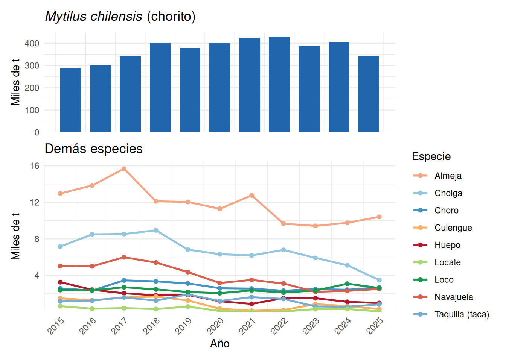

Clase 5 Moluscos Bivalvos y Gastrópodos
Los moluscos representan el segundo grupo más grande de animales en las costas chilenas, con aproximadamente 230 especies de bivalvos distribuidas en 51 familias. Son componentes clave de las pesquerías bentónicas y de la acuicultura nacional: en 2021, los moluscos aportaron más de 520.000 toneladas al desembarque total chileno (incluyendo las cosechas de centros de cultivo), siendo el chorito (Mytilus chilensis) el recurso dominante.
La clase Bivalvia y la clase Gastropoda incluyen especies de importancia ecológica, cultural y económica que van desde mitílidos de cultivo hasta gastrópodos de crecimiento lento gestionados en Áreas de Manejo.
5.1 Bivalvos
Los bivalvos son moluscos con el cuerpo comprimido lateralmente y protegido por dos valvas unidas por una charnela y un ligamento elástico. Sus branquias (ctenidios) son órganos altamente desarrollados que cumplen función respiratoria y de filtración: corrientes ciliares conducen partículas alimenticias (fitoplancton, materia orgánica) hacia la boca. Carecen de cabeza definida y su locomoción depende del pie muscular.
5.1.1 Familia Mytilidae — Choritos, Choro zapato y Cholga
Los mitílidos forman densos bancos desde el intermareal hasta ~25 m de profundidad, sobre sustratos duros o blandos con subfondo sólido. Son organismos euritermos y eurihalinos que toleran amplios rangos de temperatura y salinidad, atributo esencial para la mitilicultura en los canales y fiordos del sur de Chile.
5.1.1.1 Ciclo de vida
Son dioicos con fecundación externa masiva en la columna de agua. La larva pelágica (trocófera → veliger → umbo) deriva durante 20–25 días antes de fijarse al sustrato como postlarva mediante hilos del biso. El éxito del reclutamiento depende de la disponibilidad de sustrato y de la rugosidad de la superficie.
5.1.1.2 Mytilus chilensis — Chorito
Mytilus chilensis (Hupé, 1854) es el mitílido de mayor importancia pesquera y acuícola de Chile. Se distribuye entre la Región de Los Ríos y Magallanes, con núcleo productivo en los canales de Chiloé, Aysén y la zona de Calbuco. Su crecimiento es rápido en aguas frías y productivas: puede alcanzar tallas comerciales (≥6 cm) en 12–18 meses en sistemas de cultivo suspendido (long line).
Sistema de cultivo: La mitilicultura chilena opera con el sistema long line (cabos colectores suspendidos de líneas flotantes). Las principales etapas son: (1) captación de semilla natural en colectores artificiales (cuerdas de polipropileno), (2) desdoble y resiembra en cuerdas de cultivo, y (3) cosecha con canastas o cuerdas al alcanzar la talla comercial. Los centros productivos se concentran entre Puerto Montt y la Isla Grande de Chiloé.
La captación de semilla en colectores artificiales sustenta una producción cercana a 350.000 t anuales de chorito, en lo que se conoce como acuicultura basada en captura (CBA). En el fiordo Reloncaví, una de las principales áreas de captación del país, Molinet et al. (2021) estudiaron la distribución vertical del aporte larval y del asentamiento de Mytilus chilensis, Aulacomya atra y Choromytilus chorus entre 0 y 13 m de profundidad. Las larvas competentes se distribuyeron en toda la columna de agua sin patrones claros, a pesar de la alta variabilidad en temperatura, salinidad y oxígeno disuelto. En cambio, el asentamiento, inicialmente homogéneo, se estratificó después de seis meses: M. chilensis dominó entre 0 y 7 m y A. atra entre 7 y 13 m. En ambas especies se perdió cerca del 90 % de la semilla respecto de su abundancia máxima (retención menor al 10 %), lo que indica una baja eficiencia de la captación y la necesidad de monitorear el asentamiento y su relación con los bancos naturales cercanos.
5.1.1.3 Hipótesis de cambio climático sobre captación de semillas
Chile es el principal exportador mundial de choritos cultivados, con cosechas de alrededor de 400.000 t anuales que dependen de la captación de semilla silvestre. Molinet et al. (2025) analizaron la dinámica vertical de los bancos naturales de mitílidos en el fiordo Reloncaví en relación con los aportes de agua dulce, la salinidad y el régimen hidrológico. Sus resultados plantean que:
- El cambio climático ha reducido la precipitación anual y, con ello, los aportes de agua dulce al fiordo, lo que aumenta la salinidad de la columna de agua, especialmente en superficie.
- Este aumento de salinidad superficial podría reducir los bancos de M. chilensis y favorecer a su competidor Aulacomya atra, con efectos negativos sobre la captación de semilla silvestre.
- Al mismo tiempo, la presión de pesca sobre la semilla silvestre va en aumento. Los efectos combinados del cambio climático y de esta presión no pueden separarse con la información disponible, lo que constituye un desafío clave para diseñar medidas de adaptación.
Estas proyecciones amenazan a la mitilicultura chilena y tendrían consecuencias socioeconómicas para la acuicultura de pequeña escala. Los autores destacan la necesidad de monitorear en conjunto los bancos naturales, la producción de semilla y las condiciones oceanográficas, y de mejorar las prácticas de cultivo para reducir la presión innecesaria que la captación de semilla ejerce sobre los bancos naturales.
5.1.1.4 Choromytilus chorus — Choro zapato
Choromytilus chorus es el mitílido más grande de Chile, con tallas que pueden superar los 20 cm. Se distribuye desde Arica hasta Chiloé en el submareal rocoso (2–20 m). Presenta una interacción ecológica notable con el alga roja Gymnogongrus furcellatus: en la Reserva Marina de Mehuín, el choro zapato recluta con éxito sobre el sustrato rocoso solo en presencia de esta alga, cuyo tapete filamentoso proporciona a los reclutas un refugio contra la depredación por el gastrópodo Nucella, hasta que alcanzan una talla en la que dejan de ser vulnerables (Davis & Moreno, 1995; Moreno, 1995).
Desde el punto de vista pesquero, el choro zapato es explotado artesanalmente mediante buceo en el centro y norte de Chile. Se asume que la estructura espacial de sus poblaciones es de tipo metapoblación, donde los bancos locales son mantenidos por conectividad larval entre parches a través de corrientes costeras, lo que justifica la necesidad de conservar bancos reproductores aún en localidades de baja densidad.
5.1.1.5 Aulacomya atra — Cholga
En Chile, la cholga (Aulacomya atra) se distribuye desde Coquimbo hasta Magallanes y es un recurso relevante en la Patagonia chilena, tanto en acuicultura como en pesquería artesanal. Comparte hábitat con el choro zapato y con el chorito. En el sur de Chile, la cholga predomina en fondos de mayor profundidad; en colectores del fiordo Reloncaví, la semilla de A. atra dominó entre 7 y 13 m, mientras que M. chilensis dominó entre 0 y 7 m (Molinet et al., 2021).
5.1.3 Venus antiqua — Almeja
Venus antiqua (King & Broderip, 1832), comúnmente llamada almeja, pertenece a la familia Veneridae. Se distribuye desde el norte de Chile hasta Tierra del Fuego, con especial importancia pesquera y cultural en la zona de Ancud (Isla Grande de Chiloé), donde es un recurso emblemático de la gastronomía local y la pesca artesanal.
Habita enterrada en fondos areno-fangosos de bahías semi-protegidas, desde la zona intermareal inferior hasta ~15 m de profundidad. Alcanza la talla mínima legal (5 cm de longitud valvar) en aproximadamente 2–3 años. Su ciclo reproductivo presenta dos picos de evacuación de gametos al año (primavera y otoño). La almeja es también objeto de cultivo experimental en la zona de Los Lagos.
En términos de desembarque, la almeja ha sido históricamente uno de los recursos bivalvos más importantes de Chile, con volúmenes entre 9.000 y 16.000 toneladas anuales en el período 2015–2025.
5.1.4 Gari solida — Culengue
Gari solida (Gray, 1828), familia Psammobiidae, es conocida como culengue en Chile. La pesquería se distribuye desde Arica hasta Chiloé, con mayor abundancia en la zona norte (desde la región de Arica y Parinacota hasta la región de Coquimbo). Habita fondos arenosos semi-expuestos del intermareal y submareal somero (0–10 m). Su concha es redondeada, de color rosado o blanco con marcas radiales.
La biología reproductiva de G. solida muestra un ciclo continuo con mayor actividad gonadal entre primavera y verano (noviembre–marzo). El crecimiento es moderado, con tallas máximas de ~7 cm en 3–4 años, aunque con variabilidad entre localidades que sugiere la existencia de stocks locales diferenciados. Los desembarques mostraron una caída drástica entre 2019 y 2021 (1.252 → 129 t), con incipiente recuperación posterior.
5.1.5 Protothaca thaca — Taca
Protothaca thaca (Molina, 1782), familia Veneridae, es la taca o taquilla, uno de los recursos bivalvos más relevantes de la zona norte de Chile (Regiones de Arica y Parinacota, de Tarapacá, y de Antofagasta). Habita fondos areno-fangosos en bahías protegidas del submareal (0–15 m). Su concha es robusta, ovalada, de color blanco-cremoso con tenues radios o manchas.
La pesquería de taca es artesanal y de gran importancia socioeconómica en el norte. Los principales focos de extracción son las bahías de Arica, Iquique y Antofagasta. Los estudios de crecimiento muestran variabilidad espacial notable entre bancos del norte y el centro, indicando que cada bahía puede constituir una unidad de stock relativamente independiente, con parámetros de von Bertalanffy distintos.
Los ciclos reproductivos son continuos durante el año, con desoves principales en febrero y entre mayo–junio. La talla de primera madurez es ~2,5 cm. Su gestión se realiza parcialmente mediante Áreas de Manejo (AMERB), aunque también existe extracción de libre acceso.
Nota: en la estadística oficial de SERNAPESCA aparece como TAQUILLA; en la tabla de la figura 5.1 se combina bajo esa denominación.
5.2 Gastrópodos
Los gastrópodos son el grupo más diverso de los moluscos chilenos. A diferencia de los bivalvos filtradores, los gastrópodos de importancia pesquera son principalmente herbívoros o depredadores, con ciclos de vida más lentos y mayor vulnerabilidad a la sobreexplotación.
5.2.1 Concholepas concholepas — Loco
Concholepas concholepas (Bruguière, 1789), familia Muricidae, es el gastrópodo más emblemático y económicamente importante de Chile. Se distribuye desde Perú hasta el Cabo de Hornos, en fondos rocosos del submareal (superficie a 50 m de profundidad).
5.2.1.1 Morfología y comportamiento
Su concha es gruesa e irregular, con espira muy baja y una gran abertura oval que representa casi toda la concha. El pie muscular le permite adherirse fuertemente al sustrato rocoso. Es un depredador nocturno que se alimenta principalmente de mitílidos (Aulacomya atra, Choromytilus chorus), picorocos (Balanus spp.), almejas y tunicados. Durante el día permanece refugiado en grietas.
5.2.1.2 Ciclo de vida
Es dioico con fecundación interna. Las hembras depositan los embriones en cápsulas adheridas a la roca, de las cuales emergen larvas veliger microscópicas (~0,2 mm) que permanecen en el plancton durante varios meses. El asentamiento ocurre a 1,6–1,8 mm de talla, cuando la larva metamorfosea y se posa en el fondo. El reclutamiento —ingreso efectivo a la población bentónica juvenil— depende de condiciones locales de sustrato, depredación y alimento.
5.2.1.3 Crecimiento y talla mínima legal
El crecimiento es lento: entre 1 y 3 mm por mes, por lo que un individuo tarda entre 4,6 y 6 años en alcanzar la talla mínima legal de 10 cm de longitud total. Esta característica lo hace altamente vulnerable a la sobreexplotación y de difícil recuperación una vez que las poblaciones colapsan.
5.2.1.4 Gestión — Áreas de Manejo (AMERB)
Dado su lento crecimiento y su alto valor comercial, el loco fue objeto de una sobreexplotación masiva en las décadas de 1970–1980, que llevó a la implementación de vedas y cuotas a partir de 1989. El instrumento central de gestión actual son las Áreas de Manejo y Explotación de Recursos Bentónicos (AMERB), establecidas por la Ley de Pesca en 1991. Cada AMERB es concesionada a una organización de pescadores artesanales, que tiene derechos exclusivos de explotación a cambio de monitorear el recurso y cumplir planes de manejo basados en evaluaciones periódicas. Este sistema ha demostrado efectividad para la recuperación local de poblaciones de loco en zonas donde se implementa correctamente.
Los desembarques de loco se han mantenido relativamente estables entre 2.000 y 3.000 toneladas anuales en el período 2015–2025, reflejando el control ejercido por el sistema de AMERB.
5.2.2 Thais chocolata — Locate
Thais chocolata (Duclos, 1832), hoy Thaisella chocolata, familia Muricidae, es el caracol locate, principal gastrópodo de pesca artesanal en el norte de Chile. Se distribuye desde Paita (Perú) hasta Valparaíso, con las mayores biomasas entre Arica y Antofagasta, donde habita fondos rocosos y de conchuela en el submareal somero.
La característica más llamativa de su biología reproductiva es la formación de grandes agregaciones reproductivas denominadas “maicillo”, en las que cientos de individuos se concentran para el desove. Estas agregaciones ocurren principalmente en primavera-verano y representan una fase de alta vulnerabilidad para la población, ya que los pescadores las localizan fácilmente.
Parámetros biológicos: talla máxima 88–100 mm; talla modal en capturas 50–55 mm; primera madurez a ~40 mm. Se han identificado al menos dos períodos reproductivos al año. Su dinámica poblacional es aún poco estudiada, lo que dificulta establecer puntos de referencia biológicos para su manejo.
Los desembarques de locate (registrado como “Caracol Locate” en SERNAPESCA) muestran alta variabilidad interanual, con máximos de ~628 t (2015) y mínimos de 17 t (2021).
5.2.3 Otros gastrópodos explotados
Además del locate, en las costas chilenas se explotan otros gastrópodos como el caracol trophon (Trophon geversianus) en Magallanes —que forma agregaciones en bahías protegidas y alcanza la talla comercial (6 cm) en 3–4 años—, y diversas especies del género Fissurella (lapas), cuyo complejo multiespecífico de 13 especies en Chile presenta desafíos de gestión porque los desembarques se registran en su mayor parte sin diferenciación por especie.
5.3 Desembarques 2015–2025

Figure 5.1: Desembarques (toneladas) de principales bivalvos y gastrópodos en Chile, 2015–2025. Para el chorito, las cifras corresponden principalmente a cosechas de centros de cultivo. Nótese la escala diferencial: el chorito domina en volumen mientras que los demás recursos se presentan en la figura inferior con escala reducida. Fuente: SERNAPESCA (2025).
| Especie | Grupo | Media (t) | Mín. (t) | Máx. (t) |
|---|---|---|---|---|
| Bivalvos | ||||
| Chorito | Bivalvos | 373.302 | 290.291 | 427.884 |
| Almeja | Bivalvos | 11.811 | 9.414 | 15.672 |
| Cholga | Bivalvos | 6.702 | 3.491 | 8.935 |
| Navajuela | Bivalvos | 3.868 | 2.203 | 5.983 |
| Choro | Bivalvos | 2.717 | 2.315 | 3.452 |
| Huepo | Bivalvos | 1.681 | 876 | 3.260 |
| Taquilla (taca) | Bivalvos | 1.212 | 561 | 1.912 |
| Culengue | Bivalvos | 885 | 129 | 1.676 |
| Gastrópodos | ||||
| Loco | Gastrópodos | 2.424 | 2.052 | 3.085 |
| Locate | Gastrópodos | 282 | 17 | 628 |
5.4 Síntesis comparativa
| Especie | Nombre común | Zona principal | Hábitat | Pesquería |
|---|---|---|---|---|
| Bivalvos | ||||
| Mytilus chilensis | Chorito | Sur-Austral | Pelágico/Cultivo | Acuicultura |
| Choromytilus chorus | Choro zapato | Norte-Centro | Submareal rocoso | Artesanal/buceo |
| Aulacomya atra | Cholga | Centro-Sur | Submareal | Acuicultura/artesanal |
| Venus antiqua | Almeja | Todo Chile | Infaunal areno-fangoso | Artesanal/buceo |
| Tagelus dombeii | Navajuela | Centro-Sur | Infaunal arenoso | Artesanal/marisqueo |
| Ensis macha | Huepo | Centro-Sur-Austral | Infaunal arenoso | Artesanal/buceo |
| Gari solida | Culengue | Norte-Centro | Intermareal-Submareal | Artesanal/marisqueo |
| Protothaca thaca | Taca | Norte | Infaunal areno-fangoso | Artesanal/AMERB |
| Gastrópodos | ||||
| Concholepas concholepas | Loco | Todo Chile | Submareal rocoso | AMERB |
| Thais chocolata | Locate | Norte | Submareal rocoso | Artesanal |
5.5 Glosario
Área de Manejo (AMERB): zona costera concesionada a una organización de pescadores artesanales para la explotación exclusiva y sustentable de recursos bentónicos bajo un plan de manejo aprobado.
Biso: haces de filamentos proteicos secretados por el pie del mitílido para adherirse al sustrato.
Bivalvo: molusco con cuerpo encerrado entre dos valvas calcáreas articuladas por una charnela.
Ctenidio: branquia de moluscos; en bivalvos actúa también como órgano filtrador de alimento.
Dioico: organismo con sexos separados en individuos distintos (macho y hembra).
Fecundación interna/externa: la fecundación interna (ej. loco) ocurre dentro del cuerpo de la hembra; la externa (ej. choritos) ocurre en la columna de agua.
Gastrópodo: clase de moluscos generalmente con concha espiral, pie muscular y masa visceral torsionada.
Infaunal: organismo que vive enterrado en el sedimento.
Long line: sistema de cultivo de mitílidos con cuerdas colectoras suspendidas de líneas flotantes ancladas al fondo.
Maicillo: agregación reproductiva masiva de Thais chocolata (locate) con fines de desove.
Metapoblación: conjunto de subpoblaciones espacialmente separadas conectadas por flujo de individuos (dispersión larval).
Periodo de veda: período en que la extracción de un recurso está prohibida por ley, generalmente durante la reproducción.
Reclutamiento: proceso por el que individuos juveniles se incorporan a la fracción adulta o explotable de una población.
Trocófera/veliger: estadios larvales planctónicos de muchos moluscos, previos al asentamiento.
von Bertalanffy: modelo matemático ampliamente usado en biología pesquera para describir el crecimiento individual en longitud a lo largo del tiempo (\(L_t = L_\infty (1 - e^{-K(t-t_0)})\)).
5.6 Preguntas de autoevaluación
5.6.1 Nivel básico — comprensión
Describa el ciclo de vida de Mytilus chilensis (chorito) desde la fecundación hasta el asentamiento al sustrato. ¿Cuánto dura la fase pelágica?
¿Por qué el alga roja Gymnogongrus furcellatus es fundamental para el reclutamiento del choro zapato (Choromytilus chorus)? Explique el mecanismo ecológico involucrado.
¿Qué es una Área de Manejo (AMERB) y por qué fue creada en Chile? Mencione la especie cuya sobreexplotación motivó principalmente este instrumento de gestión.
Identifique dos diferencias entre la navajuela (Tagelus dombeii) y el huepo (Ensis macha) en cuanto a distribución geográfica y zonas de pesca.
5.6.2 Nivel intermedio — análisis
Explique cómo el cambio climático podría afectar la captación de semillas de chorito en los fiordos patagónicos. Mencione al menos dos mecanismos propuestos.
Compare las estrategias reproductivas de Mytilus chilensis (bivalvo, fecundación externa) y Concholepas concholepas (gastrópodo, fecundación interna). ¿Cómo influyen estas diferencias en la vulnerabilidad de cada especie a la explotación?
Los desembarques de Thais chocolata (locate) muestran alta variabilidad interanual. Proponga dos hipótesis que expliquen este patrón, una de origen biológico y otra relacionada con el esfuerzo pesquero.
¿Por qué la pesquería de Protothaca thaca (taca) en el norte de Chile requiere un manejo diferenciado por bahía? Fundamente con base en la biología de la especie.
5.6.3 Nivel avanzado — síntesis y aplicación
Analice la importancia del concepto de “metapoblación” para el manejo de Choromytilus chorus. ¿Qué implicaciones tiene para el diseño de Áreas de Manejo en la zona norte de Chile?
A partir de los datos de desembarque presentados (2015–2025), identifique cuáles recursos muestran tendencias preocupantes desde el punto de vista pesquero y proponga un criterio de manejo precautorio para al menos uno de ellos.
5.7 Referencias
Davis, A. R., & Moreno, C. A. (1995). Selection of substrata by juvenile Choromytilus chorus (Mytilidae): are chemical cues important? Journal of Experimental Marine Biology and Ecology, 191(2), 167–180.
Molinet, C., Astorga, M., Cares, L., Díaz, M., Hueicha, K., Marín, S., Matamala, T., & Soto, D. (2021). Vertical distribution patterns of larval supply and spatfall of three species of Mytilidae in a Chilean fjord used for mussel farming: Insights for mussel spatfall efficiency. Aquaculture, 535, 736341. https://doi.org/10.1016/j.aquaculture.2021.736341
Molinet, C., Soto, D., León-Muñoz, J., et al. (2025). Climate-driven changes in freshwater inputs to a Northern Patagonia fjord and overfishing of wild mussel seed could threaten Chilean mussel farming. Climatic Change, 178, 119. https://doi.org/10.1007/s10584-025-03956-x
Moreno, C. A. (1995). Macroalgae as a refuge from predation for recruits of the mussel Choromytilus chorus (Molina, 1782) in Southern Chile. Journal of Experimental Marine Biology and Ecology, 191(2), 181–193.
SERNAPESCA (2025). Anuario Estadístico de Pesca 2025. Series 2015–2025. Servicio Nacional de Pesca y Acuicultura, Valparaíso, Chile.